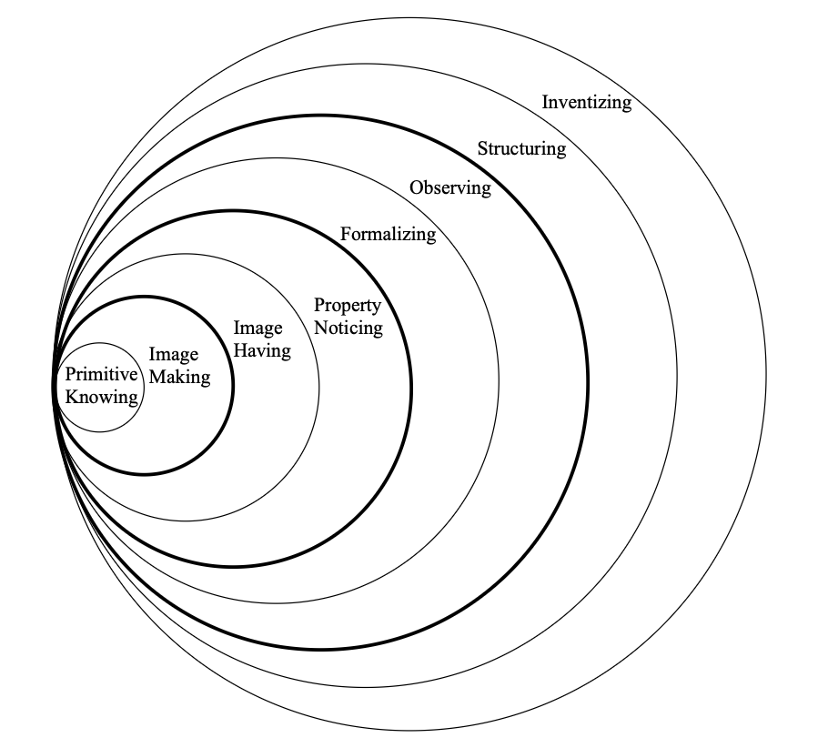
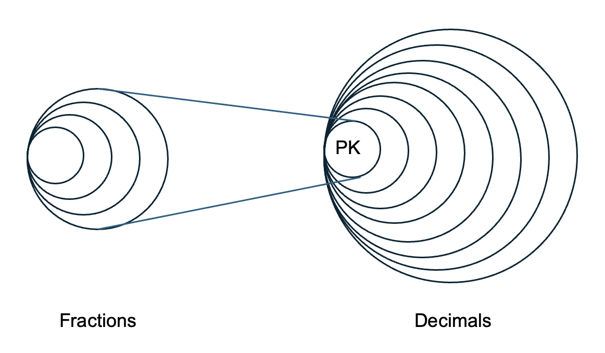
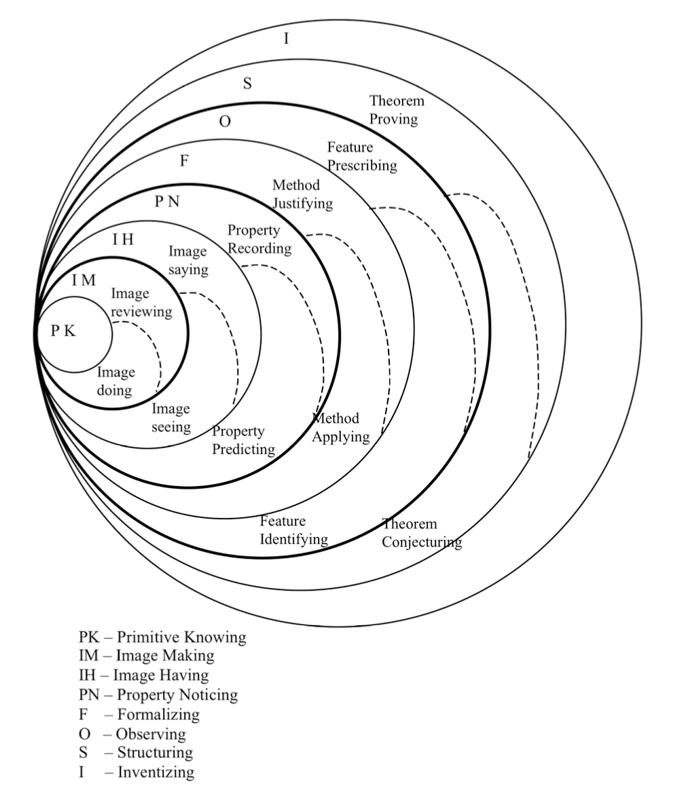
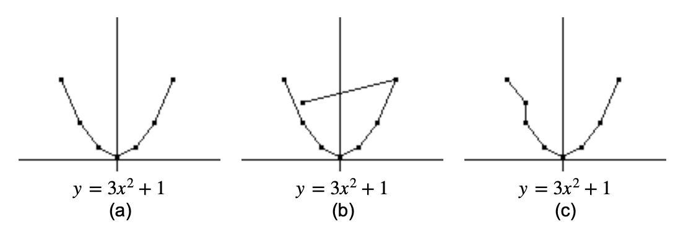
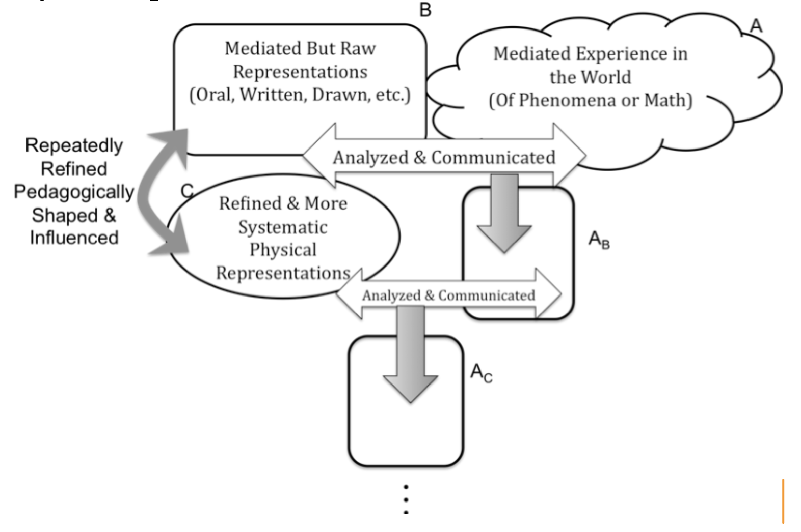
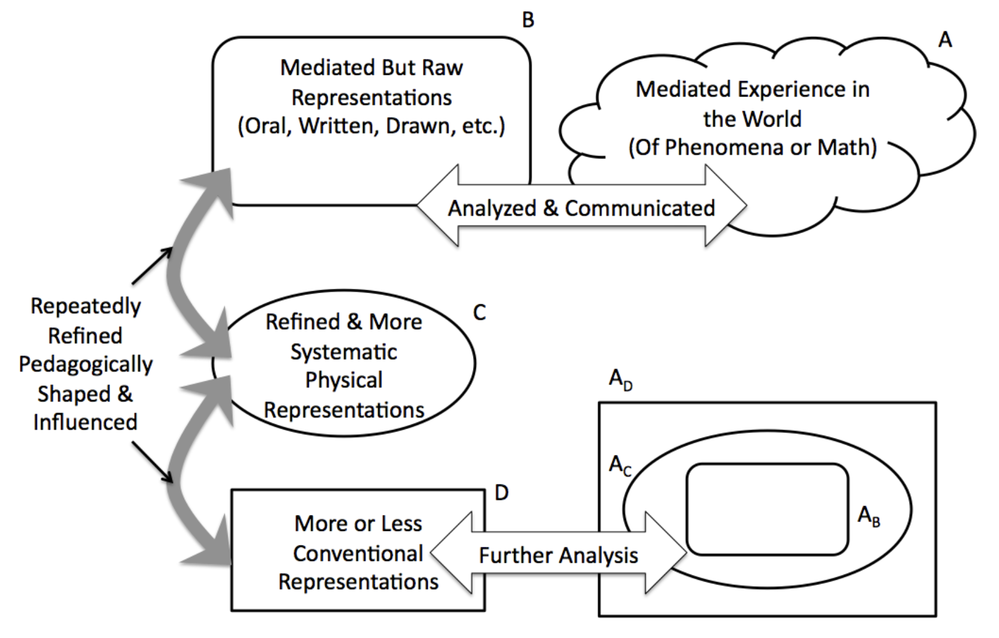

Section 1.1 A Brief History of Standards for Mathematics Education: Algebraic Perspectives
Although the Principle and Standards for School Mathematics (PSSM) (NCTM, 2000) and the Common Core State Standards (NGACBP and CCSSO, 2010) treat algebra as a standard for PreK-12, society tends to view algebra as a part of mathematics relegated to the secondary curriculum. In fact, even mathematicians often fail to understand how algebra could be taught to a first grader. Why is there such a misunderstanding between organizations such as NCTM and society? Why is there such a misunderstanding between NCTM and the mathematics community? Perhaps in order to understand why these differences in the perception of algebra exist, we must first look at the historical and traditional teaching of algebra in the United States.
Much of why we see slow advancement of educational practice is that humans are often change-averse. For example, consider the "traditional" secondary curriculum consisting of the sequence of courses: Algebra 1, Geometry, Algebra 2, and PreCalculus. Why are these courses in the sequence that they are? Doesn’t it seem odd that Geometry is sandwiched between Algebra 1 and 2? Why are the subareas of mathematics separate at all? As it turns out, tradition is the real reason we see approaches like integrated curricula (which have much support from research) mounting so much resistance. The current sequence of Algebra 1, Geometry, Algebra 2, and PreCalculus actually dates back to 1894. Let me say that again, 1894! In 1894, the National Education Association (NEA) was dealing with the fact that very few students completed high school. There was a desire to make sure as many students as possible had some exposure to both algebra and geometry before leaving school. The solution — teach Algebra 1 followed immediately by Geometry. This means that the typical student would see both by the end of the sophomore year when they might leave formal education (Reys and Reys, 2009; NEA, 1894). So to sum things up, the current system typically used for secondary mathematics curricula dates back to a time over 125 years ago where the motivation was the fact that very few students finished high school. For this reason, as educators, we should always be asking ourselves why we do what we do? We need to look at the research and ask if the assumptions we make are still valid assumptions. The reasons, "Because that’s the way we’ve always done it" or "Because that’s the way I learned it" are not sufficient for rational decision making.
Given that our current curricular structure exists for reasons that are no longer relevant, we are faced with the reality that old choices also shape current perception of the mathematics we teach. For algebra, we need to ask the questions of what is algebra and why do we view it as we do, before we can address how best to teach it. Suppose you were to ask the person on the street to describe algebra. What sort of response would you get? What about mathematics in general? This question was asked of a student from a Minnesota high school during ABC’s Primetime Live following the release of the results from the Third International Mathematics and Science Study (ABC News, 1998). In response to this question she replied, “It’s kind of a set in stone. It’s procedure. It’s a formula. You learn the formula and you know how to do math.”
Her perceptions of mathematics and, in particular, algebra, are not unique. In fact, the argument could be made that this is the perception of the majority of people — even those who are well educated. So, we must ask the question of why do so many people view mathematics as a set of procedures to be memorized? This question is of particular interest as we explore the teaching and learning of algebra since so many algebra texts are structured in such a way as to perpetuate this view.
Think back to your own algebra courses. What were the items you remember most from your textbooks? Can you recall shaded boxes housing formulae and “rules”? Do you recall the “Laws of Exponents” prominently displayed on the page? Did you ever think to question them? Or did you ever wonder why they were presented in the text before any examples like \(a^2 \cdot a^3=a^5\) were even discussed? Maybe this is the reason society holds a very procedural and limited view of algebra.
In this text, we will explore not only the teaching and learning of algebra, but also the very nature of this branch of mathematics. If we wish to understand how students learn mathematics, we must first ask questions about the nature of the mathematics to be learned. If mathematics indeed is a set of procedures to be memorized as suggested in the quote given above, then there are certain strategies that can be employed to facilitate the memorization. This would then be an appropriate method of teaching. However, if the nature of mathematics is far more than the memorization of a set of rules, the strategies employed for learning mathematics will be completely different from those employed for memorization.
Subsection 1.1.1 A Brief History of Mathematics Standards
Believe it or not, the first attempt at developing some comprehensive standards for what mathematics should be taught did not occur until 1989. The National Council of Teachers of Mathematics (NCTM) put forth the Curriculum and Evaluation Standards for School Mathematics in 1989. Since each state had control over what was taught in its schools, there was quite a variation of content covered from grade-to-grade depending on the state. The attempt by NCTM to put in writing some basic expectations was a move forward in articulating what it means to do mathematics. The Standards, as they were called, were followed by a series of Addenda that spelled out in greater detail what it meant to teach the Standards by providing examples in various subareas of mathematics.
Following the release of The Standards, NCTM developed the Professional Standards for Teaching Mathematics in 1991. The Professional Standards, as they were referred to, focused on how a teacher should teach the Standards. The Professional Standards were broken up into three key components: Process Standards, Teaching Standards, and Professional Development Standards. The Process Standards dealt with essential processes of mathematical thinking including problem solving, reasoning and proof, communication, representation, and connections. The Teaching Standards included discussion of what is a worthwhile mathematical task, the teacher’s role in promoting discourse, what is the student’s role in discourse, tools that enhance mathematical discourse, how to create an effective learning environment, and how to analyze teaching and learning. The Professional Development Standards dealt with a teacher’s knowledge of mathematics, pedagogical knowledge, knowledge of students as learners, and their own reflective practices as teachers.
Now it should be noted that both The Standards and the Professional Standards were based on decades of research on teaching and learning, but were written in a concise way without much attention to citation of the research in the text itself. One of the criticisms of these standards was that they lacked support by research. For this reason, in 2000, NCTM release an updated version of the earlier standards, called the Principles and Standards for School Mathematics (PSSM). In the revised version, greater detail was provided for the research support of the PSSM.
While the PSSM provided research-based guidance for what and how to teach mathematics, it still lacked one thing...teeth. Since NCTM is a professional organization without authority to require schools or states to implement these standards, movement to adopt them was slow. Recall that one of the motivations for standards in the first place was the need to have a cohesive curriculum that would allow for people to move from state to state without having their children subjected to gaps in learning. Suppose a child in a state would normally be taught how to work with fractions in grade 5, but moved to another state after finishing grade 4 where working with fractions was taught in grade 4. The student would miss this content and be behind as they began grade 5. The only way to avoid this problem would be for the states to agree on both the mathematical content to be taught at the various grade levels and the way in which the mathematics should be taught.
Enter The National Governors Association Center for Best Practices (NGACBP) and the Council of Chief State School Officers (CCSSO). These governmental groups decided to take what NCTM had developed and codify it into commonly agreed upon standards that all states would adpot as their state’s curriculum. As stated in the introduction to this chapter, there we called the Common Core State Standards and adopted by the vast majority of the states (41 at the time of this writing).
The path to the Common Core State Standards was not a top-down approach. It involved a great number of stake-holders. The process began in 2007 when the State Chiefs met in Columbus, OH, at the CCSSO Annual Policy Forum. There they discussed the creation of such common standards. In December 2008, the NGA and CCSSO released the report, Benchmarking for Success: Ensuring U.S. Students Receive a World-Class Education, lead by an advisory team consisting of state governors, state education leaderships, and leading educational researchers. This advisory group suggested that the states, “upgrade state standards by adopting a common core of internationally benchmarked standards in math and language arts for grades K-12 to ensure that students are equipped with the necessary knowledge and skills to be globally competitive.”
In April 2009, the NGA and CCSSO organized a meeting of governors’ education policy advisors and chief state school officers in Chicago to explore the creation of the Common Core State Standards Initiative. After the meeting, NGA and CCSSO asked states to commit to a process to develop these common standards in both English language arts/literacy and mathematics as these are the foundational subject areas students need for learning in other areas. As States showed interest, the work to develop the CCSS began.
In June of 2009, CCSSO and NGA reported commitment from governors and chief state school officers from 49 states and territories to be involved in the state-led process to develop CCSS in for English language arts/literacy and mathematics. By September of 2009, the finally tally included 51 states and territories.
In Summer 2009, working groups and feedback groups are created to develop and review the K-12 standards. As this was not just a top-down process, it is important that K-12 teachers were involved in these working groups at all stages of the review process. The in September of 2009, a draft version of the college and career readiness standards (composed of input from the standards’ writing team, state education agency leaders, and a panel of outside educational experts and practitioners) was released. These standards consisted of a summary of close to 1,000 responses, received from educators and the public.
In October 2009, feedback was given from a validation committee composed of experts on college and career readiness needs. The in November 2009, the first draft of the K-12 grade by grade college and career readiness standards was released for comment by the educational leaderships of the states. The draft of the college and career readiness standards was integrated into the grade by grade standards.
In December 2009, the validation committee provided edits on the K-12 grade by grade college and career readiness standards. Early 2010 consisted of back-and-forth release of drafts and revisions to both independent reviewers and the states. The comments given by these stake-holders were then incorporated into the document and in March 2010, a final draft of the Common Core State Standards was released to the public via the CCSS website. Both the general public and educators then provided additional feedback and the final version of the Commonn Core State Standards (for both Mathematics and English) was released in June 2010.
After the release of the CCSS, the states began a process in 2011 of reviewing the document and adopting it. In some cases this involved a state legislature ratifying the new set of standards. After adoption, the states then began a process of replacing the existing set of standards in their states and transitioning to the newly adpoted CCSS. This continued into 2012 and in 2013, 45 states, the Department of Defense Education Activity, Washington D.C., Guam, the Northern Mariana Islands, and the U.S. Virgin Islands had adopted the CCSS in ELA/literacy and mathematics. You will notice that the current number of states/territories that have adopted the CCSS are slightly less. This is due to the fact that some states decided to withdraw from the standards after reviewing the final version. This is where we stand today with respect to the current state of standards for school mathematics.
Subsection 1.1.2 Pirie and Kieren Model for Mathematical Understanding
Traditionally, mathematical content knowledge and pedagogical content knowledge have been the main parts of a dichotomous preparation program for teachers. Research suggests that this approach to the preparation of teachers is inadequate. How can we separate mathematics and the teaching and learning of mathematics? Is it possible to learn how to teach devoid of specific content knowledge? If so, then this would suggest that students learn language, social studies, art, science, and mathematics all the same way. While there are many common aspects of teaching and learning that resonate across many subject disciplines, the literature suggests that some disciplines have nuanced processes for learning that differ from other disciplines. So, if students learn different subjects differently, why do we tend to separate the mathematical content for preservice teachers from the pedagogical content? It is our opinion that both mathematical content knowledge and pedagogical content knowledge need to develop simultaneously. For this reason, we will take a unified approach to integrate mathematical learning with the theories and practice for teaching.
We have now stated our position as it relates to the integration of mathematical and pedagogical content knowledge, but how should this integration be accomplished? In order to develop both mathematical and pedagogical content knowledge simultaneously, we first must ask ourselves how we come to know either of these. To this end, we now discuss the theoretical model that guides our approach and this text.
In order to understand the significance of both the explorations and the reflective practice combined in this text, we first will give an overview of the theoretical framework guiding our approach to the integration of mathematical and pedagogical content knowledge. We have adopted the theory of growth of mathematical understanding put forth by Pirie and Kieren (1994) as our model for these materials and this will guide both the mathematical learning experiences and the pedagogical reflection in which the reader will engage throughout this course. In addition, we will later utilize Kaput, Blanton, and Moreno’s (2008) model that elaborates on the mechanisms at play as a learner moves through the levels found in the Pirie and Kieren model from a symbolic (or semiotic) point of view.
In order to understand the significance of both the explorations and the reflective practice combined in this text, we first will give an overview of the theoretical framework guiding our approach to the integration of mathematical and pedagogical content knowledge. We have adopted the theory of growth of mathematical understanding put forth by Pirie and Kieren (1994) as our model for these materials and this will guide both the mathematical learning experiences and the pedagogical reflection in which the reader will engage throughout this course. In addition, we will later utilize Kaput, Blanton, and Moreno’s (2008) model that elaborates on the mechanisms at play as a learner moves through the levels found in the Pirie and Kieren model from a symbolic (or semiotic) point of view.
In the Pirie and Kieren model, the growth of mathematical understanding occurs throughout eight levels. We are careful here to use the word “throughout” since we do not want to give the impression that these levels are linear. In fact, their theory characterizes mathematical growth as a whole, dynamic, leveled but nonlinear, transcendently recursive process (Kieren and Pirie, 1991). The Pirie and Kieren model is an elaboration of the constructivist view of understanding as a continuing organization of knowledge structures as described by von Glasersfeld (1987), but we must also consider that we have the ability to influence and shape each others understanding because learning is a social process (Vygotsky, 1978). Freeman et al. (2014) suggest that active learning where students are engaged in experiences rather than passively listening to an instructor promotes greater depth of understanding and so we will take this approach in this text. In addition, communication also plays a role in our thinking as Sfard (2008) suggests and so we need to be mindful of these dynamically linked components of learning if we are to create an environment where exploration and student autonomy are key parts of concept development.
In order to visualize this model for growth of mathematical understanding consider the diagram below.

Here the model is viewed as concentric circles or layers with each new layer containing the previous layers much like peeling an onion. It is also important to note that there is not a single directional movement from inner to outer layers, but rather a student may move back and forth between layers as they work on organizing knowledge in a dynamic process of creating understanding.
It is also important to state that although this model does have an underlying hierarchy to its levels or layers, there is no intentional judgment of the outer layers being better or more advanced mathematically. In fact, as new mathematics is developed we often see experienced mathematicians moving through various levels of this model. The innermost layer called, Primitive Knowing, does not imply a low-level understanding of concepts, but rather a basic series of knowledge and skills needed to pursue a new concept that is under development. For example, the Primitive Knowing layer for a new concept being developed by the learner may actually represent an outermost layer of understanding for a previously developed concept that is utilized in the development of the new concept. Pirie and Kieren use the example of fractions and decimals where a fairly sophisticated understanding of fractions is used as a starting point for the development of decimal concepts. In a sense, this could be thought of as an onion within an onion (see Figure 1.1.2) to use our “garden” variety analogy.

Now that we have an overview of how the levels of Pirie and Kieren’s model fit together, let us discuss each level in more detail. The eight levels beginning with Primitive Knowing and ending with Inventizing can be characterized in the following way.
- Primitive Knowing : The basic knowledge, skills, and understanding the learner has relative to the development of new understanding.
- Image Making : The learner uses previous understanding in a new way to make distinctions and advance understanding through a process of concept development.
- Image Having : The learner no longer must do the specific activities that brought about a mental construct, but can now use that construct directly.
- Property Noticing : The learner can manipulate and use combinations of various parts of the newly developed mental images to construct pertinent features or properties within a specific context.
- Formalizing : The learner can abstract characteristics from the prior image-dependent knowledge that exemplified the properties noticed in the earlier level.
- Observing : The learner has the ability to reflect on formalizations and express these reflections as theorems.
- Structuring : The learner begins to think about formal observations as an interconnected and interrelated set of theorems coming together to form a theory. The learner also now sees the need for verification and justification of mathematical propositions through proof or arguments.
- Inventizing : The learner has a deeply developed and structured understanding of the topic and can move away from the basic concepts that gave rise to the understanding and ask new questions that might lead to the development of new concepts.
One feature of the Pirie and Kieren theory that relates to the teaching and learning of algebra specifically is the description of progression of abstraction from a symbolic sense. You may have noticed some bold rings in the diagram above (Figure 1.1.1) describing the layers involved in this model. These bold rings are referred to as the “don’t need” boundaries. The bold rings are used to convey the idea that once students get past a “don’t need” boundary, they can now work in a more abstract sense without accessing specific inner understanding or images that were found within the bold boundary that gave rise to the understanding that is found in the outer region. This is a significant part of the theory as it relates to algebra since one of the most important goals of the teaching and learning of algebra is bringing the student to higher and higher levels of abstraction. We will address the role of abstraction in greater detail later, but here it is important to point out this aspect of the general theory guiding the text.
To this point we have simply described the nature of each level of the Pirie and Kieren model and how they fit together, but there is a more powerful aspect of the theory that makes it particularly useful in grappling with how mathematical understanding comes to be. In order to explain mathematical understanding, we need to include a mechanism for explaining the growth. In the Pirie and Kieren model, this mechanism is called folding back.
It is important to acknowledge that as we learn, there are varying depths of our understanding as related to any particular topic or concept. We have all experienced this when we first learn about a new idea and can even use that mathematical idea to solve problems only to later encounter the same idea within a different context and be surprised by the new application of such an old idea. This element of surprise is the evidence that our understanding of that idea has just deepened. Pirie and Kieren account for this growth in the depth of understanding through the construct of folding back. Basically, folding back is the learner’s ability to revert back to an inner layer of the understanding process in order to make sense of a situation or problem that is not readily solvable or understandable at the learner’s current level. It is important to note that this return to prior levels is not similar to the experience the learner had previously in that earlier level, but rather is also influenced by the deeper understanding that has been obtained in the outer level as well. The re-visitation to the inner level results in what Pirie and Kieren refer to as a thickening of the inner layer. There is no unique pathway in which this thickening occurs since the number and manner of the folds backward are unique to the individual learner. This process emphasizes that the levels or layers of this model of mathematical understanding do not occur in a single direction, but occur in a series of steps that involve the interactions of both older and newer levels of understanding.
The third and final feature of Pirie and Kieren’s model we wish to highlight is the structure that takes place within each layer or level. Here, for each level beyond Primitive Knowing the levels are partitioned into two complementary modes: acting and expressing. Both of these components of understanding are essential before moving on from the inner to the outer levels. This elaboration of the model is given a graphic interpretation below with dotted lines representing the boundaries between modes.

To illustrate the difference between these components of each level, let us consider the example given by Pirie and Kieren (1994, pp. 176-178). Students were given the following tasks.
Consider the function \(y=3x^2+1\text{.}\) Make a table of values for \(x\) and \(y\text{,}\) \(x\) taking values from -3 to +3. Now draw the graph of the function. Repeat this for the following functions: \(y=x^2\text{,}\) \(y=x^2-2x\text{,}\) \(y=2x^2-2x\text{,}\) \(y=2x^2-2x-1\text{.}\) (Pirie and Kieren, 1994, p. 176)
If we examine the first function, we can see how the students’ responses are related to their location within the model. After the students had been given the opportunity to sketch several of the graphs, the teacher then gave a new point, \((-2,20)\) to include in the graph of the first function, \(y=3x^2+1\text{.}\) The students’ responses help illustrate the components of the various levels. For example, if a student simply connects the new point to the end of the existing graph as in graph (b) in Figure 1.1.4, this student is still image doing. Here the student is still simply following directions and not reflecting on the different graphs. Now suppose the student eliminates the segment between \((-3,28)\) and \((-2,13)\) and then proceeds to connect the new point into the graph as shown in (c). This student is image reviewing since they have reviewed their previous graphs and inserted the new point into a pattern that they think the graph should follow. These two examples describe students who are in the Image Making level of the Pirie and Kieren model.

The Image Having level of the model consists of the two complementary components titled Image Saying and Image Seeing. In relation to the previous example, a student in the image seeing part of the level might make statements such as, “ ’that can’t be right’, ’it can’t go there’, or who, when having joined up the new point, [say] ’that doesn’t look right’ ” (Pirie and Kieren, 1994, p.178). In contrast, a student in the image saying level might make statements like, “ ’I thought they should all be U-shaped’ or ’we’ve already got a point for \(x=-2\)’ ” (Pirie and Kieren, 1994, p.178). These comments help illustrate the “acting” and “expressing” components of each level. In the image seeing part, the student has begun to advance their understanding through the review of the previously sketched graphs and subsequent construction of mental images for the graphs of a specific family of functions. In the image saying part, the student can go beyond simply acknowledging a pattern and can also articulate why the point does not fit the image.
We have discussed the differences of the components within each of these two levels of understanding, but how are the levels themselves different? Using the same example, consider what the learner engaged in the Image Making level is capable of accomplishing. Here the student is primarily involved in activities that result in observable consequences that they must then make sense of in order to fit the observations into an existing schema. In contrast, in the Image Having level, the learner can now work with the images (in this case, noting that quadratics have certain features or characteristics) without the need to conduct the same types of activities that were required in the Image Making level.
While Pirie and Kieren use the construct of folding back to explain how a student progresses through the deepening levels of understanding, this model still fails to explain the details of how the student connects concepts within this process so that folding back can occur. Kaput, Blanton, and Moreno (2008) provide a model that fills this gap. Next, we will explore how the interaction between symbol systems and the ideas they represent fuel the development of understanding and allow the folding back process to take place.
Subsection 1.1.3 Kaput, Blanton, and Moreno Model for Symbolic Meaning
One of the powerful aspects of mathematics is its use of symbolization. On the other hand, from the aspect of the learner, one of its worst obstacles is its symbolization. Since the early development of mathematics, power has come from the development of symbol systems used to describe the concepts that are fundamental to furthering mathematical knowledge. The encapsulation of big ideas, that before took pages and pages to communicate, into smaller collections of symbols allows the reader to see various stages of arguments within one field of view. However, from a learner’s perspective, it is the unpacking of the symbolization that poses a significant hurdle in the development of conceptual understanding.
If we think of this in terms of concept image and concept definition (Tall and Vinner, 1981), a small collection of symbols typically elicits much more information than could be contained in paragraphs of written prose. Tall and Vinner describe concept image as “the total cognitive structure that is associated with the concept, which includes all the mental pictures and associated properties and processes.” (p. 152). In contrast, the concept definition can be described as “a form of words used to specify that concept” (p. 152).
For example, suppose we say the word “dog”. What comes to mind? It might likely be a mental image of a beloved pet from your childhood or an image of a traumatic event you had with a strange animal while walking last week. These images are far more complex than the simple three letters “dog” or a formal definition from Webster’s dictionary. It is our experiences that are connected to the compact system of symbols “dog” that form our concept image of a dog. Similarly, it is the experiences that a student has between mathematical ideas and the symbols that represent them that determine her/his concept image for a given concept definition.
So how does the use of symbol systems influence our learning, and even more, our development of new ideas? Kaput, Blanton, and Moreno (2008) propose a model that describes how we develop both our understanding of existing ideas as well as the creation new concepts. The key to this model is the communication and analysis between two worlds. One is the "real world" (i.e. the world of either broader mathematical or physical experiences) and the other is the world of the symbols that we use to represent these "real world" experiences. In this model, the learner creates raw representations of ideas and in turn these representations provide the learner with a tool to reason about these ideas. As the learner uses these raw representations for reasoning, they begin to view the "real world" experiences differently as the representations serve as a lens through which reality is filtered. As this process progresses, new, more refined representations and symbols are created influencing both the tools used for reasoning as well as the learner’s view of the real world itself (Figure 1.1.5). You will note that the diagram contains various incarnations of reality as influenced by different symbol systems. Reality is a social construct (although there are certain facts about the world around us) in that we interpret information collected by our senses through the lenses of our experience. Here \(A_B\) represents reality (\(A\)) as viewed through the representation system, \(B\text{.}\) Similarly, \(A_C\) represents reality (\(A\)) as viewed through the representation system, \(C\text{,}\) and so on. Our view of reality is constantly evolving, influenced by our experiences.

It is important to note that this process, while focusing on representations, is consistent with Sfard’s (1991) process of interiorization, condensation, and reification where concepts become internalized through interaction with the various natures of the mathematical ideas. In some ways, the use of technology here reduces the length of time for Sfard’s interiorization and facilitates the condensation process. Alleviating the computational load can also keep the lack of procedural fluency from becoming a cognitive obstacle to reaching condensation or reification as observed by Lapp, Nyman, and Berry (2010).
Expanding on our earlier discussion of perception of reality, in Figure 1.1.5, we begin with experiences in the world (\(A\)) and then create a set of raw representations (\(B\)) to describe these experiences. These raw representations can take forms such as rough diagrams, written prose, or pictures. In turn, the representations we create give us a means to reason about the mathematical ideas, influencing how we view reality (\(A_B\)) based on the representations we previously created. Now in light of our new perspective of the world, our representations eventually prove inadequate for dealing with new information. Thus, we create more refined sets of representations (\(C\)) such as graphs, more refined algebraic expressions, or tables to deal with our new view of reality. As a result, our view of reality (\(A_C\)) is influenced relative to our new symbol system and this process continues as our symbolization evolves.
The diagram given in Figure 1.1.5 only tells part of the story when it comes to the development of symbolization. Kaput, Blanton, and Moreno (2008) also point out that each more refined symbol system does not necessarily supplant the previous system, but rather adds to the existing system and the way the learner views reality. Therefore, both the symbol system and the perception of reality from previous iterations of this process become subsets of systems that are found within new and more extensive views of mathematics (Figure 1.1.6). In a way, it is the retention of the old symbol systems that aid in the folding back process described by Pirie and Kieren (1994). The interplay between the old and new symbol systems provides a vehicle for the student to begin to see an old and less sophisticated understanding of a concept through a new lens with respect to the new symbols. In turn, the new symbols provide a way to reason about an old idea in a more advanced way paving the path to a deeper understanding.

The goal of this section was to give an overview of the theoretical model used to guide our perspective on how mathematical understanding comes to be—in particular, how this model is helpful in understanding the teaching and learning of algebraic ideas. We will not elaborate on each level of the Pirie and Kieren model, but if the reader wishes a more in-depth description of the levels and components of the model, you should read the article by Pirie and Kieren (1994). Throughout this course, you will be expected to apply this model along with that of Kaput, Blanton, and Moreno (2008) to various vignettes and cases as a mechanism for analyzing student work and making decisions related to teaching in the secondary classroom.